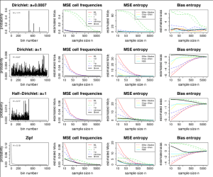

Estimation of Entropy, Mutual Information and Related Quantities

entropy page on CRAN.
This package implements various estimators of entropy, such as the shrinkage estimator by Hausser and Strimmer, the maximum likelihood and the Millow-Madow estimator, various Bayesian estimators, and the Chao-Shen estimator. It also offers an R interface to the NSB estimator. Furthermore, it provides functions for estimating Kullback-Leibler divergence, chi-squared, mutual information, and chi-squared statistic of independence. In addition there are functions for discretizing continuous random variables.
Current Version: 1.2.1
Authors: Jean Hausser and Korbinian Strimmer.
Documentation and Installation:
enter at the R console: install.packages("entropy")
- Manual (pdf file) and release history.
- Download of entropy version 1.2.1 source package.
- Archive of previous versions of entropy.
- Licensed under the GNU GPL version 3 (or any later version).
Additional Information and Relevant Papers:
- A comparison of various entropy estimators estimators implemented
in the "entropy" package (click on image to enlarge):
. - Hausser, J., and K. Strimmer. 2009. Entropy inference and the James-Stein estimator, with application to nonlinear gene association networks. J. Mach. Learn. Res. 10: 1469-1484. (arXiv:0811.3579)
{kind=link}
Back to software page.